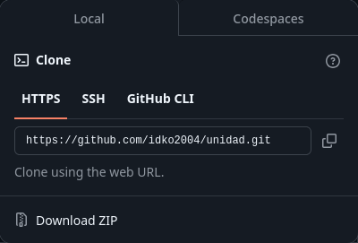

Es posible que ya tengas node instalado, para comprobarlo, ejecuta los comandos:
node --version y npm --version
Si sale un número de versión y no un mensaje de error, significa que ya los tienes instalados y puedes pasar a la siguiente sección de la guía.
No estoy seguro de que versión es la mínima para poder ejecutar Unidad, la más antigua con la que he probado ha sido node v18.18.2. Si sientes que tu versión de node es muy antigua, igual puedes seguir con el resto de esta sección.
Para instalar una versión de node más reciente, personalmente recomiendo utilizar nvm (Node Version Manager)
La guía de instalación de nvm está disponible en su página de github aquí, es recomendable seguir esta guía de ser posible. En esta página (la de Unidad) se tratará de seguir la guía de instalación de nvm disponible a la fecha de escribir esta guía.
Alternativamente, puedes descargargar node y npm a través del gestor de paquetes de tu distribución de linux.
Descarga el script de instalación de nvm
Abre una terminal en la carpeta en la que descargaste el script y ejecuta el siguiente comando:
chmod +x install.sh
Esto asegura que el script que acabamos de descargar pueda ser ejecutado, si no, es posible que el sistema operativo bloquee la ejecución del script.
Ahora, vamos a ejecutar el script de instalación de nvm, para esto ejecutamos:
./install.sh
Ahora ya tenemos instalado el gestor de versiones de node, con esto podemos instalar una versión de node, para instalar la versión estable más reciente ejecutamos:
nvm install node
Una vez este comando termine de ejecutarse, cerramos la terminal
Ya deberíamos de tener node instalado, para comprobarlo, vuelve a abrir una terminal y ejecuta los comandos node --version y npm --version. Esta vez debería de salir la versión de node que acabamos de instalar.
Si planeas hacer un script que ejecute Unidad automáticamente, o algo parecido, ten en cuenta que la forma en la que nvm funciona es añadiendose a tu archivo .bashrc, por lo que si ejecutas node directamente, no funcionará. Para que funcione, debes ingresar la ruta en donde nvm ha instalado node, suele ser algo parecido a esto: /home/user/.nvm/versions/node/vx.x.x/bin/node. Claro que esto no importa si no planeas hacer un script.
Ve al repositorio de Github de Unidad: https://github.com/idko2004/unidad
Haz click en este botón para descargar el código:
Se abrirá esta ventana:

Haz click donde dice "Download ZIP"
Extrae el zip en la carpeta en la que quieras que esté Unidad.
Ten en cuenta que luego tendrás que ejecutar Unidad desde esta carpeta, por lo que no lo pongas en algún sitio muy complicado.
Alternativamente, si tienes instalado git, puedes clonar el repositorio con el comando
git clone https://github.com/idko2004/unidad.git
Unidad necesita de algunas librerías para poder funcionar correctamente, para instalarlas vamos a utilizar el comando npm.
Abre una terminal en la carpeta en la que haya extraído Unidad y ejecute:
npm install
Y ya estará instalado todo lo necesario para que Unidad pueda funcionar.
Es posible que npm diga que algunas de las librerías tienen vulnerabilidades, esto es cierto. Sin embargo, no creo que estas afecten a Unidad. Y, de todas formas, dudo mucho que vayan a intentar hackear su juego de cartas. Si quiere saber más acerca de estas vulnerabilidades, puede ejecutar el comando npm audit.
Para ejecutar el servidor de Unidad, Abra una terminal en la carpeta de Unidad y ejecute uno de estos comandos:
npm start o node main.js
El servidor de Unidad estará ejecutándose en esa terminal, así que no la cierre (al menos no mientras estén jugando).
Ahora solo queda entrar a jugar.
En la terminal deben salir los métodos para poder conectarse al servidor junto con las direcciones ip.
En tu navegador favorito, ingresa en la barra de direcciones, la ip del dispositivo que hace de servidor y el puerto del servidor http, de esta manera:
<DIRECCIÓN IP>:<PUERTO HTTP>
Dirígete a https://idko2004.github.io/unidad/play
Ingresa la dirección ip del dispositivo que hace de servidor y el puerto del servidor WebSocket, de esta manera:
<DIRECCIÓN IP>:<PUERTO WS>
La dirección ip y los puertos, junto con estas mismas instrucciones, deben estar disponibles en la pantalla de la terminal del servidor de Unidad.